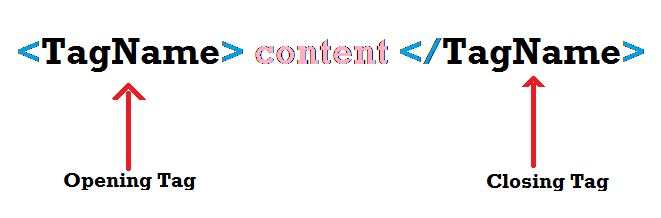
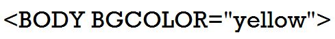

There are many types of tags used in HTML. They are basically building blocks of a web page. They tell the browser how the information is to be displayedon the web page. Tags do not appear in browser window but they affect the display of the text and non-text items in it. Each tag in HTML follows specific rules and syntax. HTML tags are not case-sensetive.
In HTML document, a tag name begins with an opening angular bracket (<) and ends with a closing angular bracket (>). For example,

Both opening and closing tags are same. The only difference is that the closing tag contains a forward tags. A combination of opening tag, content, and closing tag is called an element.
The HTML Tags can be categorised as:
Container Tags:- The tags that have both opening and closing tags are called Container Tags. Most of the tags used in HTML are containers tags.
Empty Tags:- Empty tags only contains opening tags. They do not have closing tags. These tags do not enclose any data.
Examples of Empty Tags:-
br, hr, etc.
Note!!!!:- we did not have used angular bracket here in empty tags because, if we use it, the tags will disapper. Note to use angular brackets by your knowledge...
Attributes
An attribute is a property that provides some additional information about a tag. It enhances the functionality of a tag. It always specified in the opening tag. ALl attributes consist of two parts- a name and a value
For example,

The BGCOLOR attribute of the tag is used to add a background color to the body of the web page.
The WIDTH is the attribute of the tag which spcifies the width of the horizontal line in pixels or percentage. By default, the widwth is 100%